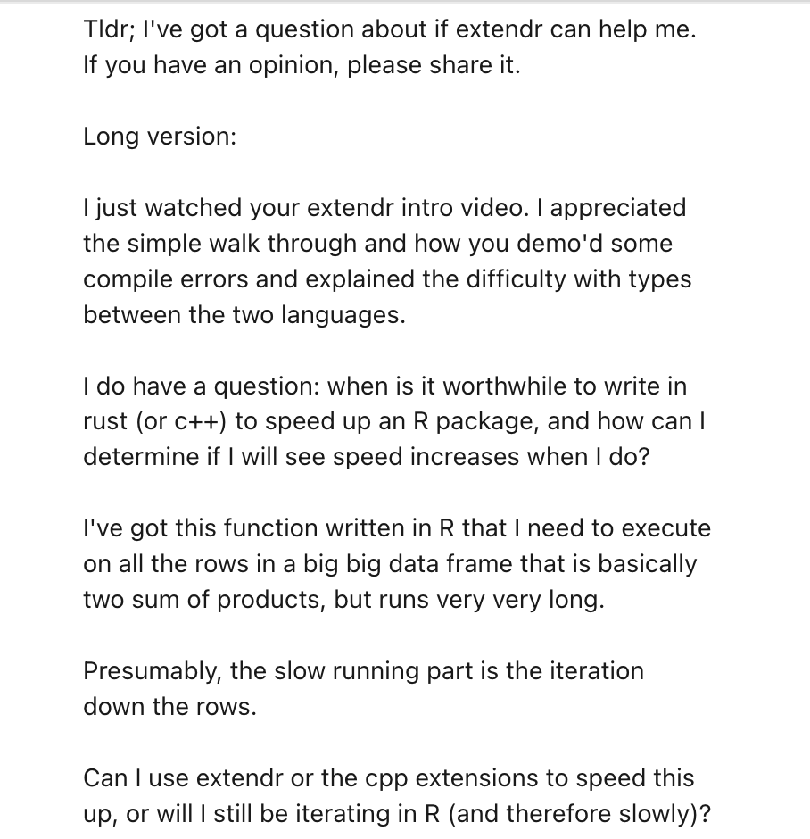
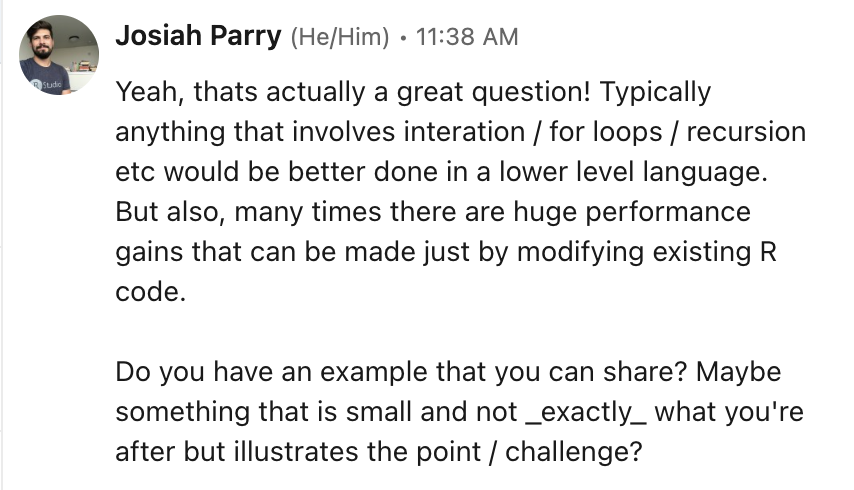
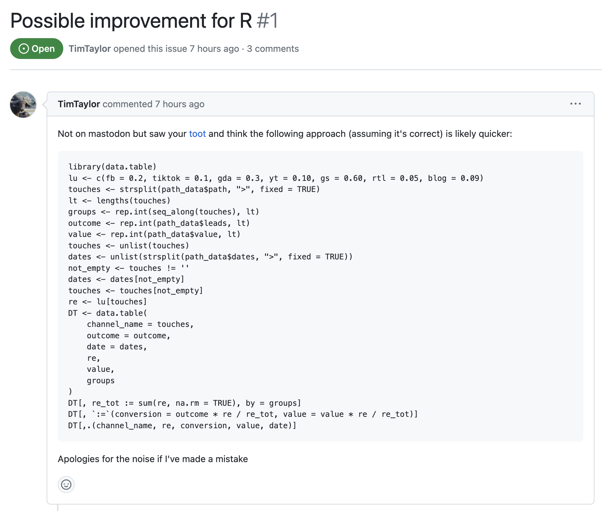

# A tibble: 6 × 4
path dates leads value
<chr> <chr> <dbl> <dbl>
1 tiktok>blog>gs>fb>rtl 2023-04-17>2023-02-25>2023-01-24>2023-03-12… 1 6794.
2 yt>blog>gs>fb>gda 2023-01-18>2023-01-27>2023-02-19>2023-01-01… 1 5981.
3 fb>gs>yt 2023-04-21>2023-02-20>2023-03-23 1 5801.
4 gda>yt>tiktok>blog 2023-04-24>2023-03-01>2023-05-03>2023-04-29 1 4583.
5 rtl 2023-02-20 1 6735.
6 gda>yt>rtl>tiktok 2023-02-04>2023-02-26>2023-01-09>2023-03-22 1 7238.Untitled
About a week ago I posted a video on using R and Rust together with the extendr library. Based on its reception on LinkedIn and Mastodon, people seem to like the prospect quite a bit. Though, who of you have actually tried it out yet? Do you have a Github repo you’ve been working on? Share it in the comments below.
On Wednesday, I had a message in my LinkedIn inbox from a new connection.

Answers to questions like this are always “maybe” 🤷.
So I asked for a reproducible example I can work with.

Within a couple of hours he shared a github gist that I was able to work with.
To get a sense of the problem, lets look at some of the sample data he provided.
As I understand it, we are looking at path attribution which is a marketing problem. Users will interact with a company through a number of different platforms or mediums. Each time they interact with company content is referred to as a “touch.” The people that are touched are referred to as leads. These leads have a dollar value attached to them. Typically it is assigned based on the company that you work for. Folks from a fortune 500 company are most likely to have a higher potential value than someone working for a non-profit. Non-profits can’t spend all that much money.
path10k[["path"]][1:5][1] "tiktok>blog>gs>fb>rtl" "yt>blog>gs>fb>gda" "fb>gs>yt"
[4] "gda>yt>tiktok>blog" "rtl" To my understanding each of these paths represent all of the media that a customer consumed before they were converted—meaning purchased a good.
Each touch point is separated by a greater than sign >. I think this is technically considered Markov Chain Attribution? If you know, put it in the comments.
Each touch has some theoretical impact on you purchasing a good. The order in which you experience content might matter. How much would omitting one of these touches impact your results? That is called a removal effect which is captured in the object removal_effects_table.
removal_effects_table# A tibble: 7 × 2
channel_name removal_effects_conversion
<chr> <dbl>
1 fb 0.2
2 tiktok 0.1
3 gda 0.3
4 yt 0.1
5 gs 0.6
6 rtl 0.05
7 blog 0.09For each path we want to know the effect of each channel on conversion and how much value we can assign to them. For each row of the data frame we want to return a data frame that looks like so.
#> channel_name re conversion value date
#> 1: tiktok 0.10 0.09615385 653.2879 2023-04-17
#> 2: blog 0.09 0.08653846 587.9591 2023-02-25
#> 3: gs 0.60 0.57692308 3919.7273 2023-01-24
#> 4: fb 0.20 0.19230769 1306.5758 2023-03-12
#> 5: rtl 0.05 0.04807692 326.6439 2023-03-09This is the function that they wrote to return the desired frame. Let’s walk through it line by line.
attribute_path <- function(path_str, date_str, outcome, value, retbl) {
#break the path_str and date_str into vectors of touch points and dates
touches <- stringr::str_split_1(path_str, ">")
dates <- stringr::str_split_1(date_str, ">")
#remove dates and touches where touches is an empty
dates <- dates[touches != '']
touches <- touches[touches != '']
# create an output dataframe that shows the fraction of
# a lead due to each touch/channel_name by
# 1 getting the removal_effects_conversion
# (renamed to re) value for each touch
# 2 normalizing re for reach touchpoint by dividing by the
# sum(re) for all touchpoints in the path_str
# 3 multiplying outcome and value by the renormalized re
tidyr::tibble(channel_name = touches[touches!='']) |>
dplyr::left_join(
retbl |> dplyr::select(channel_name, removal_effects_conversion),
"channel_name"
) |> dplyr::rename(
re = removal_effects_conversion
) |>
dplyr::mutate(
conversion = outcome * re / sum(re, na.rm = TRUE),
value = value * re / sum(re, na.rm = TRUE),
date = dates
)
}Line 3 and 4 is used to split the path and dates string on the > greater than sign and create a vector from them.
Next, lines 6 and 7 are used to remove any empty strings.
Then from lines 16 through 27 the real magic happens using a fairly complex dplyr pipe.
First impression
I don’t know about you all but after programming in R for like 8 years now, I have a pretty decent intuition about things that may cause problems in R code or at least can be simplified or improved. When I look at this there are 3 immediate things I notice.
The first the simplest. The touches vector is filtered to not include any empty strings on line 7. On line 16 the touches vector is filtered again in the creation of the tibble. That’s redundant code so it can be deleted.
Next, I see that the sum of the re column is calculated twice. We generally want to calculation things as few times as possible.
And lastly, it’s the elephant in the room. I mean no offense to the author of this code or tidyverse folks in general. But the pipeline is a tinge messy. There’s a lot going on. And most notably, there is a join onto a table that is selected upon all in one function. That means that every time this function is executed the removal_effects_conversion table is selected and then joined upon. Joins are costly. They’re slow. Generally, we want to only join tables when its really necessary. And here, I’m not sure it is.
Let’s walk through this function step by step. To do that let’s create R objects as placeholders for the function arguments.
path_str <- "tiktok>blog>gs>fb>rtl"
date_str <- "2023-04-17>2023-02-25>2023-01-24>2023-03-12>2023-03-09"
outcome <- 1L
value <- 6794.194
retbl <- removal_effects_tableWith that, lets start running through the function line by line.
touches <- stringr::str_split_1(path_str, ">")
dates <- stringr::str_split_1(date_str, ">")
touches <- touches[touches != '']
dates <- dates[touches != '']
touches[1] "tiktok" "blog" "gs" "fb" "rtl" dates[1] "2023-04-17" "2023-02-25" "2023-01-24" "2023-03-12" "2023-03-09"Great we have two vectors of the same length. Next let’s begin to take apart the dplyr pipeline. I remove the redundant part of the code. We have a very small data frame.
dplyr::tibble(channel_name = touches)# A tibble: 5 × 1
channel_name
<chr>
1 tiktok
2 blog
3 gs
4 fb
5 rtl What about the join? What is happening here? We’re joining the removal effects table onto our tiny column it looks like. From looking, I know that only two columns actually exist in the retbl object so I’m removing the selection simplifying it further.
# A tibble: 5 × 2
channel_name removal_effects_conversion
<chr> <dbl>
1 tiktok 0.1
2 blog 0.09
3 gs 0.6
4 fb 0.2
5 rtl 0.05Now the result here is actually very simple. We just want to know the removal effect associated with each channel. Rather than turning a vector into a data frame and then joining the table on, I want to let you in on one of my favorite tricks.
Lookup Vectors
I’m not sure if you know this, but all vectors can have names. Most people who grew up on the tidyverse might not actually know this. I was fortunate to have struggled without it for a few years before it became its own metapackage.
Let’s look at an example. Let’s create a vector containing the values 1 through 26 to represent the indexes of the alphabet.
alpha_index <- 1:26
alpha_index [1] 1 2 3 4 5 6 7 8 9 10 11 12 13 14 15 16 17 18 19 20 21 22 23 24 25
[26] 26What if we want to access the index based on the letter in the alphabet? Well, we can give this integer vector names. We can use the built in letters object to assign the names like so:
names(alpha_index) <- letters
alpha_index a b c d e f g h i j k l m n o p q r s t u v w x y z
1 2 3 4 5 6 7 8 9 10 11 12 13 14 15 16 17 18 19 20 21 22 23 24 25 26 Now when we print it out, we see that the alphabet is printed above the index.
Why this is so cool is because we can access the values based on the names rather than just position. I can create a character vector of letters of my name and extract the values.
alpha_index[c("j", "o", "s", "i", "a", "h")] j o s i a h
10 15 19 9 1 8 Maybe you already see where this is going. Instead of joining a whole entire table, we can create a look up vector instead. It’s far simpler, and most importantly, far faster. We can do this by using the setNames() function. The first argument is the vector the second is the names.
lookup <- setNames(
retbl[["removal_effects_conversion"]],
retbl[["channel_name"]]
)
lookup fb tiktok gda yt gs rtl blog
0.20 0.10 0.30 0.10 0.60 0.05 0.09 With this we can simplify the code greatly already. We can lookup the return effects value by selecting from the lookup vector the values from our touches vector
lookup[touches]tiktok blog gs fb rtl
0.10 0.09 0.60 0.20 0.05 Let’s bench mark this alone:
bench::mark(
lookup_table = lookup[touches],
dplyr_join = {
tidyr::tibble(channel_name = touches) |>
dplyr::left_join(
retbl,
"channel_name"
)
},
check = FALSE
)# A tibble: 2 × 6
expression min median `itr/sec` mem_alloc `gc/sec`
<bch:expr> <bch:tm> <bch:tm> <dbl> <bch:byt> <dbl>
1 lookup_table 164ns 246ns 3750654. 0B 0
2 dplyr_join 576µs 628µs 1489. 2.99KB 34.9This alone is a huge performance gain.
If you don’t need a data frame don’t use one.
If you don’t need it, don’t use it
We can rewrite the rest of the function using only vectors now that we figured it out!
re <- lookup[touches]
re_tot <- sum(re, na.rm = TRUE)
conversion <- outcome * re / re_tot
val <- value * re / re_tot
tibble::tibble(
channel_name = touches,
re,
conversion,
value = val,
date = dates
)# A tibble: 5 × 5
channel_name re conversion value date
<chr> <dbl> <dbl> <dbl> <chr>
1 tiktok 0.1 0.0962 653. 2023-04-17
2 blog 0.09 0.0865 588. 2023-02-25
3 gs 0.6 0.577 3920. 2023-01-24
4 fb 0.2 0.192 1307. 2023-03-12
5 rtl 0.05 0.0481 327. 2023-03-09Rewrite function
attr_path2 <- function(path_str, date_str, outcome, value, lookup) {
touches <- stringr::str_split_1(path_str,">")
dates <- stringr::str_split_1(date_str,">")
dates <- dates[touches != '']
touches <- touches[touches != '']
re <- unname(lookup[touches])
re_tot <- sum(re, na.rm = TRUE)
conversion <- outcome * re / re_tot
value <- value * re / re_tot
tibble::tibble(
channel_name = touches,
re,
conversion,
value,
date = dates
)
}Benchmark it
bench::mark(
original = attribute_path(path_str, date_str, outcome, value, retbl),
base_R = attr_path2(path_str, date_str, outcome, value, lookup)
)# A tibble: 2 × 6
expression min median `itr/sec` mem_alloc `gc/sec`
<bch:expr> <bch:tm> <bch:tm> <dbl> <bch:byt> <dbl>
1 original 2.44ms 2.96ms 258. 2.25MB 28.9
2 base_R 396.72µs 449.63µs 1997. 59.78KB 41.9Already we see a bunch of performance gains at a single iteration. However this intended to be applied to an entire data frame by using purrr.
#
